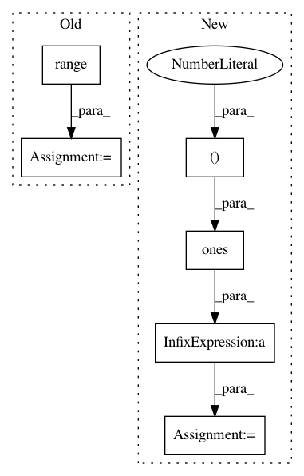

533c15592a59aff3abbde7b0f59148c8eb6f52a7,geomstats/geometry/hypersphere.py,Hypersphere,random_uniform,#Hypersphere#Any#Any#,171
Before Change
spherical_coord[:, -1] *= 2
point = gs.zeros((n_samples, self.dimension+1))
for i in range(self.dimension):
point[:, i] = (
gs.prod(gs.sin(spherical_coord[:, :i]), axis=1)
* gs.cos(spherical_coord[:, i]))
point[:, -1] = gs.prod(gs.sin(spherical_coord), axis=1)
else:
assert bound <= 0.5
After Change
sin_prod = gs.cumprod(gs.sin(spherical_coord), axis=1)
factor_1 = gs.hstack((gs.ones((n_samples, 1)), sin_prod))
factor_2 = gs.hstack((gs.cos(spherical_coord), gs.ones((n_samples, 1))))
point = factor_1 * factor_2
else:
assert bound <= 0.5
point = bound * (2 * gs.random.rand(*size) - 1)
point = self.intrinsic_to_extrinsic_coords(point)
In pattern: SUPERPATTERN
Frequency: 4
Non-data size: 6
Instances
Project Name: geomstats/geomstats
Commit Name: 533c15592a59aff3abbde7b0f59148c8eb6f52a7
Time: 2020-01-15
Author: cshewmake2@gmail.com
File Name: geomstats/geometry/hypersphere.py
Class Name: Hypersphere
Method Name: random_uniform
Project Name: suavecode/SUAVE
Commit Name: 6fd1cef5797fd76e8ea6b68ee9338dce759768ad
Time: 2020-06-06
Author: ebotero@stanford.edu
File Name: trunk/SUAVE/Methods/Aerodynamics/Common/Fidelity_Zero/Lift/compute_induced_velocity_matrix.py
Class Name:
Method Name: compute_mach_cone_matrix
Project Name: modAL-python/modAL
Commit Name: 9bf5f79f13ebd9f86111e75b872d692b92eec5b9
Time: 2018-09-18
Author: theodore.danka@gmail.com
File Name: tests/core_tests.py
Class Name: TestUtils
Method Name: test_linear_combination
Project Name: freelunchtheorem/Conditional_Density_Estimation
Commit Name: 6fbef6a3631d94991ab02a9f7411e3b6fd954dfc
Time: 2019-01-12
Author: jonas.rothfuss@gmx.de
File Name: tests/unittests_estimators.py
Class Name: TestConditionalDensityEstimators_2d_gaussian
Method Name: test_NKDE_with_2d_gaussian